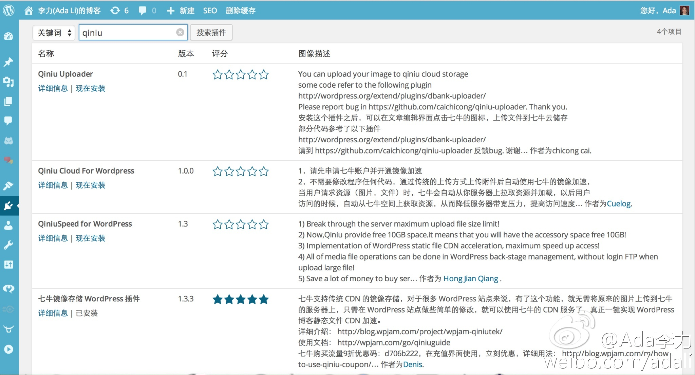

一说起移动，听到很多人的反应就是做个App。Native App目前有几个难点，开发成本高，推广成本更高，而且从用户角度，有三个大门槛需要逾越，一个是下载安装，一个是激活应用，一个是持续使用。最后一个门槛是最高的，手机屏幕有限，装不了太多应用，绝大多数App, 最后都是被卸载的命。

Ada李力
2014-10-30
Ada李力
2014-10-30
全国新闻网站将正式推行新闻记者证制度 统一管理  全国新闻网站将正式推行新闻记者证制度 统一管理 - 这个规定是说没有记者证的话，新闻网站上的用户是不能发新闻了么？哪些新闻网站会中枪？
全国新闻网站将正式推行新闻记者证制度 统一管理 - 这个规定是说没有记者证的话，新闻网站上的用户是不能发新闻了么？哪些新闻网站会中枪？
Ada李力
2014-10-30
@Ada李力:
全国新闻网站将正式推行新闻记者证制度 统一管理 全国新闻网站将正式推行新闻记者证制度 统一管理 - 这个规定是说没有记者证的话，新闻网站上的用户是不能发新闻了么？哪些新闻网站会中枪？
Ada李力
2014-10-30
看到评论中不少人在喷，但我确实更喜欢改版后的微博，只是很不爽在升级时不给选项，也没有回退操作。很多人其实是讨厌变化的，常用工作界面做了这么大的调整，参考下Windows的升级吧，反正从XP之后，我对Windows升级的负面看法越来越多，主要是找不着原来熟悉的地方了，忒麻烦。

Ada李力
2014-10-30
因为找非结构化数据云存储方案，看了看七牛云，发现有wordpress插件，于是搜索了下，相关插件有四个，一个下载量是最高的，得益于作者通过博客宣传，并写了详细的说明PDF文档放新浪微盘下载，七牛官网还做了推荐。其实其它三个插件未必不好，输在宣传上了。
- 